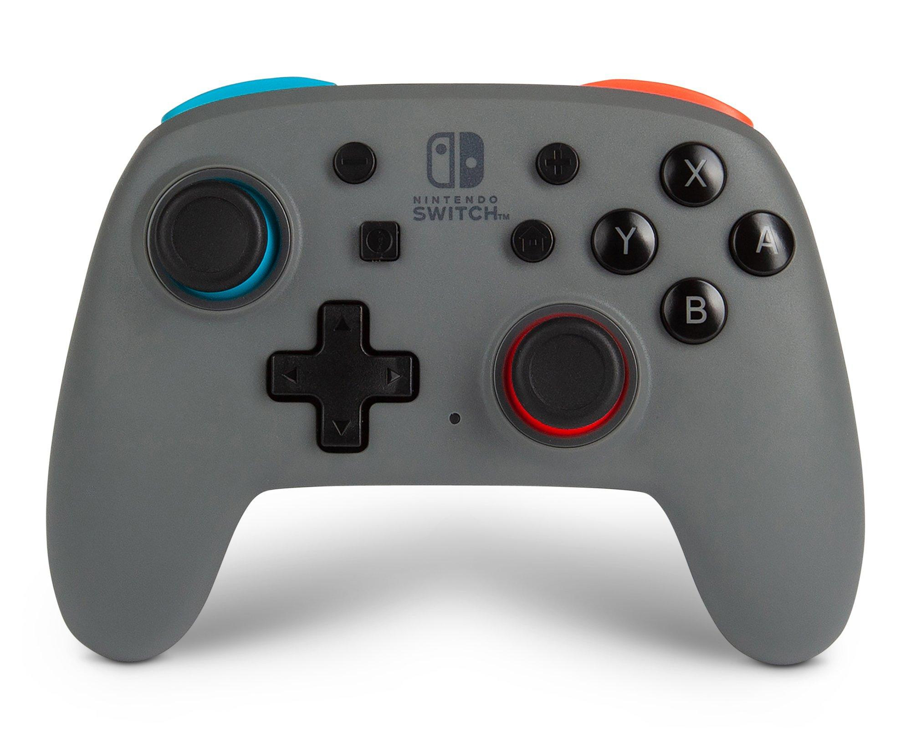

Here are some of my hobbies!
Videogames
I mainly play games on PC. Usually, I'm playing games with friends, like as League of Legends and Teamfight Tactics. Sometimes I play solo games too, such as Slay the Spire.
Manga

I enjoy manga since it's easy to acess and quick to read during breaks. Plus there's a large variety of genres and really amazying art.
Fun fact: My favorite manga is One Piece.
Travel

I've travelled to several countries since I was little. My favorite part of travelling is sightseeing locations I've seen digitally.
Fun fact: The favorite place I've gone to is Japan.
Music

While I don't make music, it's something I've always loved. As I've gotten older my taste in music has grown with the music that's around me.
Fun fact: Every month I make a new Spotify playlist